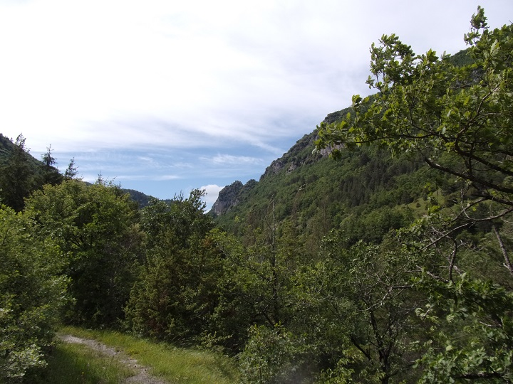
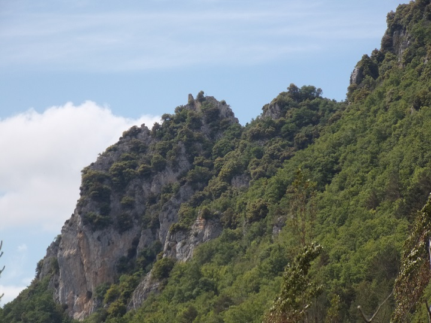
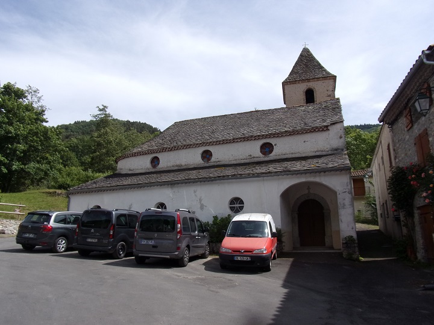
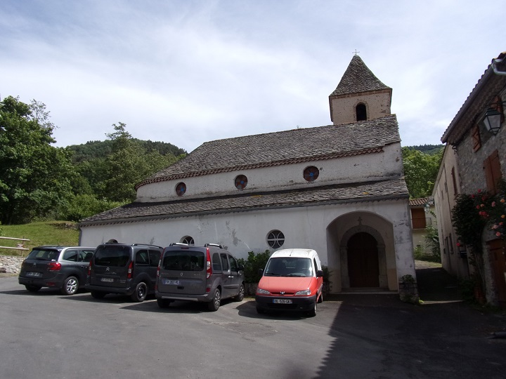

En bordure du Rébenty, rive droite, juste après le pont permettant l'accès au coeur du village commence ce sentier de découverte.
Panneau décrivant la randonnée

Le pont d'accès au village sur le Rébenty


Quelques décorations le long du Rébenty
Voici un provisoire qui dure, déjà 13 ans que le pont romain est partiellement éboulé... Attend-on qu'il soit écroulé pour le réparer ?
Vue vers les gorges et le chateau d'Able qu'on peut déjà apercevoir dès le début du chemin (ce château sera le fil rouge tout le long de notre randonnée)



Ce chemin est pour les courageux avec des pentes jusqu'à plus de 40 % aussi bien dans la montée (qui n'en fini pas) puis dans la descente, la majeure partie du trajet se passe en forêt avec d'autre vue que des arbres... De très rare trouée.


 

Un chemin de terre part de derrière l'église en direction du Clat, ce chemin mène au chateau .